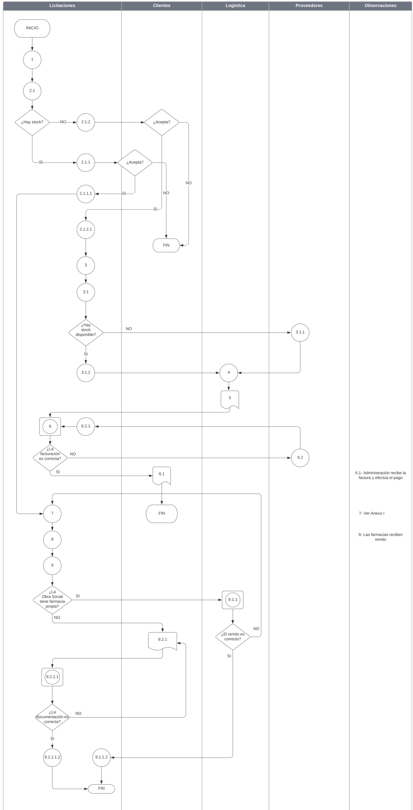
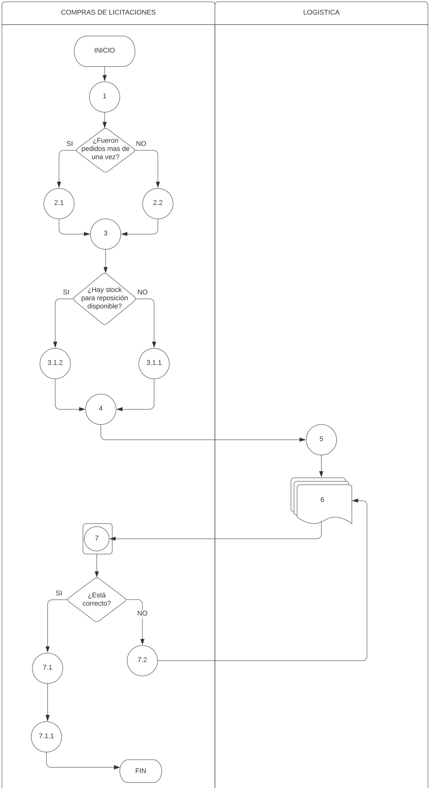
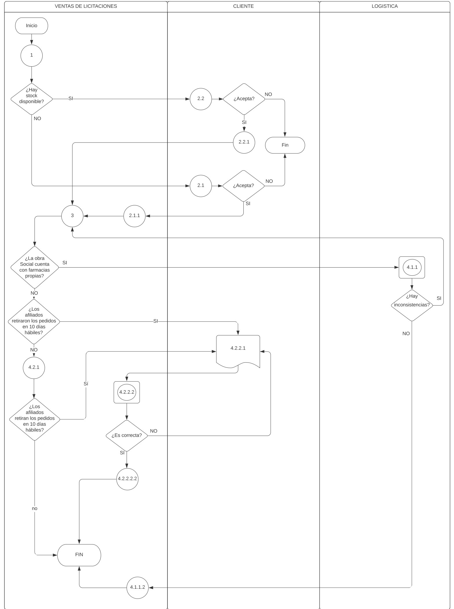

Relevamiento y análisis

- Falta de formalización.
- No hay descripción clara de sus límites.
- No hay un responsable del proceso.
- El patrón del pensamiento está centrado en el proceso.
- Se hace énfasis en la puntualidad y exactitud como medida de efectividad.
- Para asegurar la eficiencia del proceso se apunta al tiempo de procesamiento.
Diagnóstico
Propuestas de solución
- Formalización del proceso de licitaciones que defina los tiempos estándares que mejoran la efectividad del proceso y faciliten el control de los mismos.
- Modernización del proceso relevado a través de la separación del mismo en dos procesos distintos.

